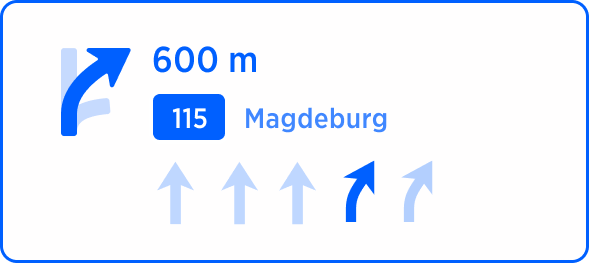
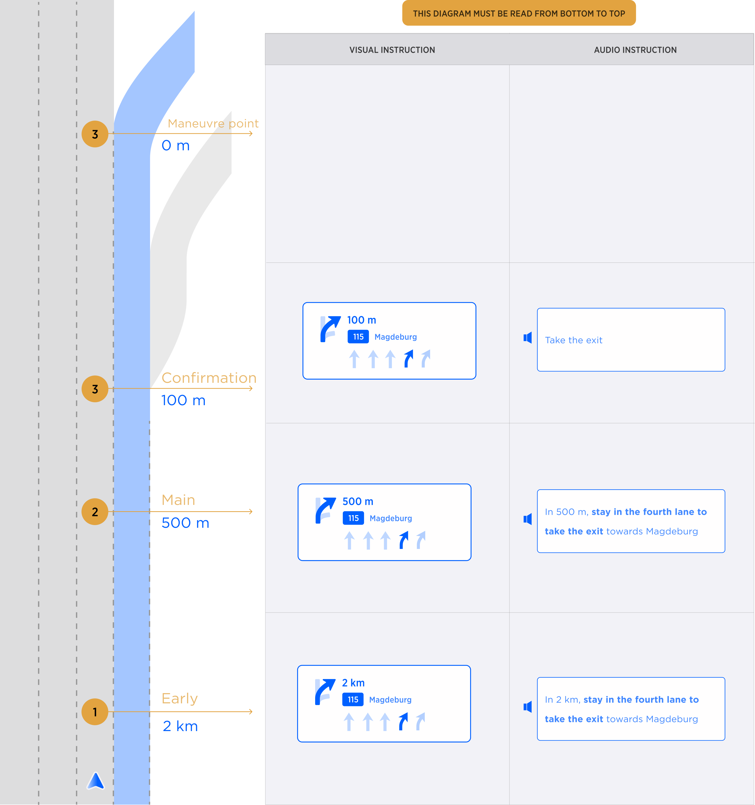

Table of Contents
Ambiguous Exit instruction
There are situations where the user may accidentally take the wrong exit because there are 2 (or more exits) very close together.
This instruction aims to resolve this ambiguity by providing visual information (new maneuver arrows) and audio information (new voice instructions) in advance.
How we define Ambiguous Exit
- The intersection is present on Controlled Access Roads.
- 2 exits are available at the same direction of turn (left or right). Forks are not considered as Multiple Close Exits intersections.
-
The distance between the exits is <= to 100 meters
Note: When the first exits the user is approaching is the correct one, it is not considered as Multiple Close Exits intersection
Note: We don’t cover situations with 3 exits so far. This need sto be handled later, if such locations exist.
| Instruction |
Ambiguous Exit |
|
| Description |
This Instruction is given in Highway when 2 exits are very close together and the user should take the second one. |
|
| Location |
Location URL |
From: 52.49853675765874, 13.281703922757428
To: 52.50133164878146, 13.280364250433866 |
| Road Geometry |
 |
 |
| Visual Instruction |
 |
The Manouver arrow in Multiple Close Exit scenario is the only visual component that changes in the Horaizon Panel.
The basic idea is to improve the Monouvre arrow while adding the wrong exit components.
Monouver arrow consists of:
- correct exit (here in blue)
- wrong exit (here in light blue)
- Straight road (here in light blue)
Note: Manouvre arrow can point right (right exit) and left (left exit) depending on highway structure |
| Audio Instruction |
In 600m stay in the fourth lane to take the exit towards Magdeburg |
|
| Notes |
Icon representing Ambiguous Exit instruction should reflect the geometry of the manoeuvre. In this particular case main road continues straight, while 2 exit roads deviate to the right. This geometry is reflected in the manoeuvre arrow and Lane Guidance arrows. |
|
| Audio Template |
[distance] [action] [purpose] [towards] |
|
The diagram below shows how the VISUAL INSTRUCTIONS and the AUDIO INSTRUCTIONS change as the maneuver approaches.
The same Maneuver Arrow is displayed in all 3 phases: Early, Main and Confirmation.
Early and Main phases have the same Audio Instruction except for the "distance" part (e.g. “600”)
Confirmation phase has dedicated Audio Instruction (e.g. “Take the exit")

Concider adding instruction for entering highway (and Bundestrasse) as continuation of the current road.